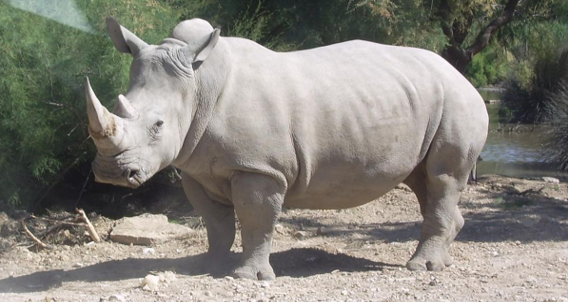
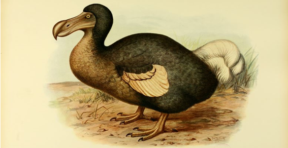

Animaux éteints dans le monde
Le rhinocéros blanc
Le dernier rhinocéros (mâle) blanc s’est éteint en mars dernier à l’âge de 45 ans. Il s’agissait de l’unique survivant de son espèce. Sa disparition est due aux braconnages importants entre les années 1970 et 1980.
Le dodo
Si vous avez déjà mis les pieds sur l’île Maurice, vous n’êtes pas sans savoir que le dodo est l’emblème national. Cet étrange pélican géant a malheureusement été exterminé par les colons et marins, qui ont envahi l’île sauvage en s’appropriant les fruits de sa nature luxuriante.
